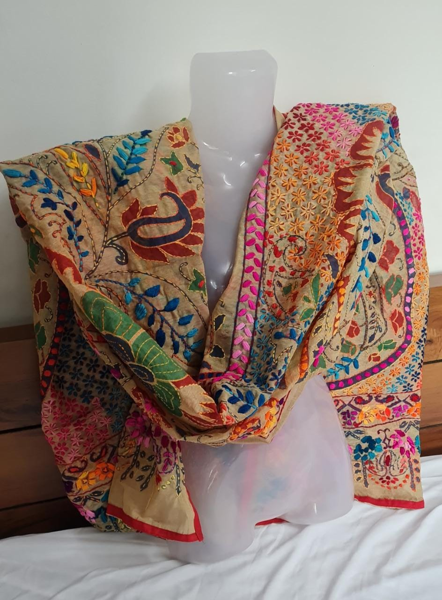
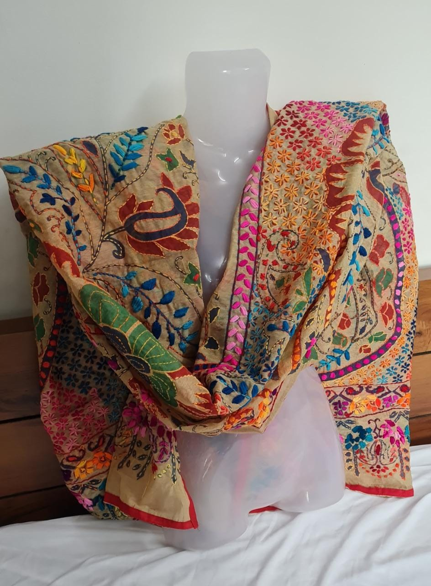

📖 Origin & Evolution
Phulkari, meaning “flower work,†is a traditional embroidery style that originated in Punjab around the 15th century. Women used vibrant silk threads on hand-spun cloth to create intricate floral patterns. Originally crafted as dowry items and gifts, Phulkari later became a cultural identity of Punjab.
💡 Did You Know?
🌼 Each stitch in Phulkari is made from the back of the fabric, yet creates beautiful patterns on the front.
👩‍🌾 Traditionally, Phulkari was never sold; it was handmade by women for family occasions.
🧵 The vibrant silk floss used is called Pat, giving Phulkari its bright, shiny look.
🏛️ UNESCO has recognized Phulkari as part of Punjab’s intangible cultural heritage.
👑 Famous Phulkari Styles
Bagh – Dense embroidery covering the entire fabric.
Chope – Embroidery gifted to brides during weddings.
Tilpatra – Small motifs scattered across the cloth.
Sainchi – Depicts daily life, animals, and rural scenes.
🯠Quick Quiz: Which thread is traditionally used in Phulkari embroidery?